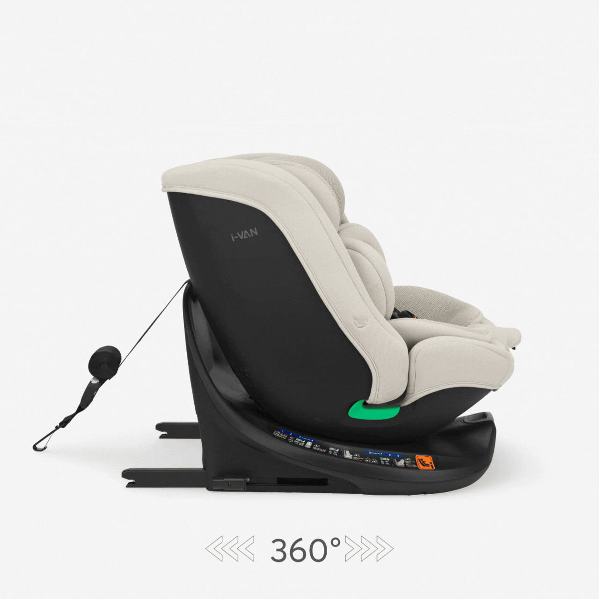

{{BRAND_UPPER}}

[שאלה שתופסת — למשל: טעות נפוצה שמסכנת?]
[הבטחה — לדוגמה: 2 דקות וזה מאחוריך]
STEP
01
[טיפ 1 — כותרת]
[מה לעשות בפועל]
STEP
02
[טיפ 2 — כותרת]
[מה לעשות בפועל]
{{BRAND_UPPER}}
[פעולה — לדוגמה: קבלו מדריך מלא]
לחץ כאן